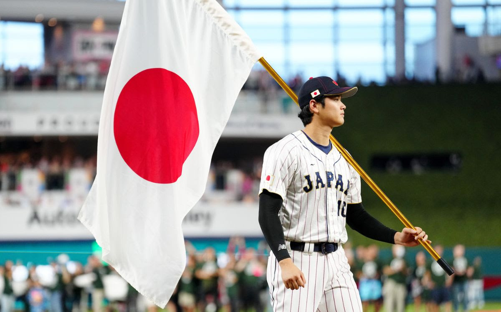
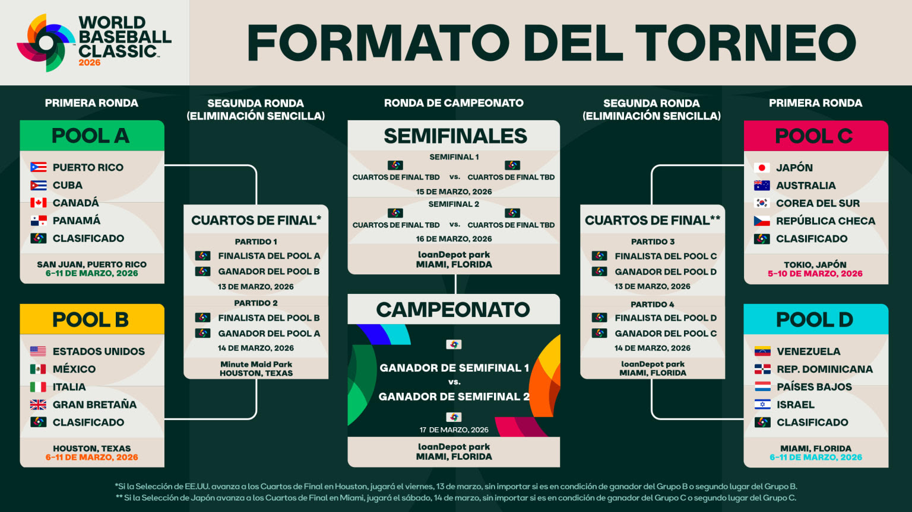
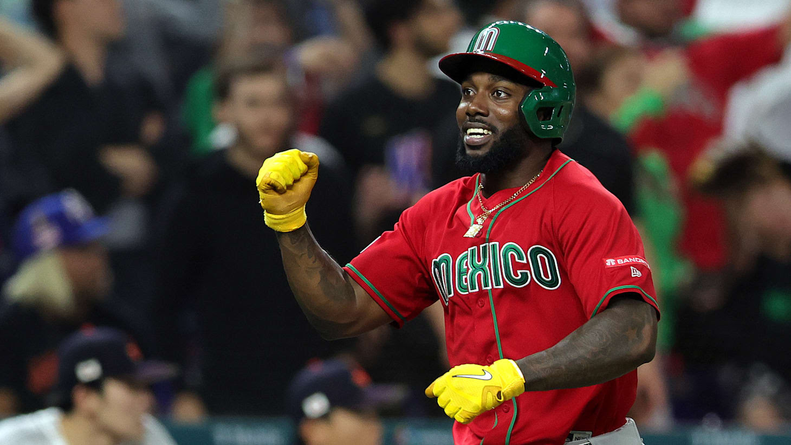

El evento competitivo más grande del béisbol internacional ya está a la vista. Veinte equipos pronto saldrán a los terrenos a disputar uno de los trofeos más codiciados de este deporte en la sexta edición del Clásico Mundial de Béisbol (WBC). Con el inicio del torneo en marzo, aquí te brindaremos las alineaciones probables que puedan tener todos los equipos participantes.
El torneo comenzará el 5 de marzo en el estadio Tokyo Dome con el duelo entre las novenas de China Taipéi y Australia jugando en el partido inaugural por el grupo C. Los otros apartados, ubicados en el Estadio Hiram Bithorn en San Juan, Puerto Rico; Daikin Park en Houston; y loanDepot Park en Miami, comenzarán un día después.

Miami, Houston, San Juan y Tokio serán los epicentros del béisbol mundial.Varias de las principales estrellas que año tras año nos deleitan en el béisbol de la Major League Baseball (MLB) ya han dicho presente para esta edición del clásico, lo que confirma que es un evento en crecimiento y que cada vez se toman más en serio los jugadores.
Aunque los focos seguramente estarán en el "marciano" Shohei Ohtani, con la posibilidad de un cuarto título para su equipo y segundo individual, también hay otros grandes peloteros que acapararán la atención de la fanaticada.

Ohtani buscará defender el trono ante un renovado Team USA liderado por Judge.Mientras que Francisco Lindor guiará al conjunto de Puerto Rico, veremos en acción también a Salvador Pérez calzando los arreos de Venezuela en su cuarto torneo, mientras que el cañonero Aaron Judge lidera la constelación de estrellas con la que Estados Unidos buscará su segunda corona.

La afición mexicana espera repetir la euforia de la edición anterior.